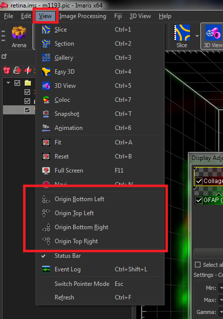
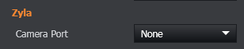

F.A.Q
Q - How can I open my images on another system?
A - As detailed in the File Manager section, Fusion automatically saves files into the Root directory as IMS files, and txt files containing the metadata. Opening images on another system is easiest if you have Imaris, which can open the IMS files as they are. Note that once the files are moved or copied from the acquisition system, saving them from Imaris will reduce the size of the file by about 66%. This is because Imaris uses compression by default. Because Fusion is an acquisition system and compressing the files on-the-fly could limit the maximum speed, this option is disabled by default. It can be enabled in the Preferences, File Manager section.
The other benefit of Imaris is that, when combined with the XT module, linking with FIJI allows immediate export of the image into FIJI, without the intervening steps of saving as TIFF / IMS.
First, point Imaris to the FIJI executable in the File, Preferences, Custom Tools menu:

Now, images in Imaris can be quickly exported to FIJI using the FIJI menu in the main window:

If you do not have access to Imaris, ImageJ or FIJI can open both TIFF files (native support) and IMS files (depending on the Bio-Formats plugin).
Opening TIFF files in ImageJ / FIJI
By default, Fusion will export files from the File Manager in OME TIFF format.
These can be opened natively in ImageJ / FIJI. However, the dimensions may not be correct - the most common issue is that the image is imported as a continuous series of frames with time as the dimension.
1) Export the dataset from Fusion as OME TIFF
2) Take note of the dimensions in the image – e.g. the number of Time, Z, Channels etc.
3) Drag and drop the resulting file into FIJI or use the Bio-Formats function. (in FIJI - File, Import, Bio-Formats).

4) Once the dataset is open, convert it to the correct dimensions by using the Image, Hyperstacks, Stack to Hyperstack option.
5) Select xyzct from the Order dropdown (this is the third option down):

6) Input the correct dimensions and click OK.
7) FIJI should now show the image with sliders for each dimension. The colours may differ from those shown in Fusion / Imaris but can be reassigned by using the LUT icon in the main FIJI window.
Opening IMS files in ImageJ / FIJI
FIJI is a release of ImageJ that includes many useful plugins for handling biological images. Hence its acronym "FIJI": Fiji is just ImageJ...
NOTE - The following procedure is not support by the FIJI / Bioformats team as it involves using a newer dll than that supplied with FIJI. Using this dll may cause other plugins to not function. Any issues opening IMS files in FIJI should be reported to the Bioformats team, as Andor are not responsible for Bioformats development.
To ensure that FIJI can open IMS files as well as possible, the workaround is as follows:
1) Download and install FIJI (this is generally done by unzipping the FIJI folder to a location of your choice - it is NOT recommended to use the Program Files or Program Files x86 folders).
2) Ensure FIJI is up to date - run the updater from the Help, Update FIJI menu item.
3) Download the latest NetCDF java release here. (Choose the NetCDFAll file).
4) Place the file in the jars directory of your FIJI folder from step 1)
5) Delete the existing file e.g. netcdf-4.3.19.jar. This should ensure that FIJI uses the file you downloaded in step 3).
NOTE – When updating FIJI, make sure to exclude the netcdf.jar from being updated (select “Keep as-is”), otherwise you will need to follow step 5 again.

The metadata can also be viewed by enabling the options shown below.
Enabling Use Virtual Stack can also help with memory management when opening large datasets.

Q - The "Open in Imaris" button is greyed out / inaccessible.

A - This is either because Imaris is not installed, or because a previous version has been uninstalled. Try running the Imaris installer again and selecting "Repair".
Q - The image is flipped when I open it in other software.
A - This is most likely because Fusion and Imaris default the origin of the image axes to the bottom left corner. Many software packages default to the upper left corner. Imaris offers the option to change the axes origin as follows:

Q - How can I remove all the images from the File Manager?
A - There are two ways to do this:
Select the first file, hold the SHIFT key and select the last file. Click Delete Selected and choose Remove from List

Close Fusion and browse to the following location: Documents\Fusion User Data\Config\ and delete the Data Set Gallery.config file.

Q - How can I acquire images from two cameras at the same time?
A - This is done by linking the Channels together. See Dual Camera Simultaneous Acquisition.
Q - How can I run Fusion as a different user?
A - Fusion uses the Windows login to determine the current user. Please see the Multi-User section for further details.
Q - How can I capture images at maximum speed?
A - The Finite Burst Protocol offers the ability to capture a images at maximum speed. Please refer to that section for further details.
Q - My images have artefacts / bright spots / scan lines - what should I do?
A - Scan lines may be a result of incorrect camera and/or Protocol settings - see the Finite Burst section for further details of the correct settings to use.
A - Contact your local Andor Customer Support department.
Q - I cannot see laser on my sample - what should I do?
A - There could be many reasons for this. This most likely are one or more of the following:
Microscope is not in the correct imaging port.
An interlock is not in the correct position. On a system with an ILE, this will manifest itself as a lack of two red LEDs illuminating, despite the ILE key switch being on. Depending on the hardware, this could be the microscope imaging port; the microscope transmitted light arm; the ILE key switch; MicroPoint / Mosaic components.
The camera is not Live / Snap / executing a Protocol. On most systems, the laser exposure is synchronised with the camera exposure using Active Blanking.
The ILE shutter is not open.
The microscope fluorescent cube(s) are in the wrong position for the excitation laser wavelength.
The microscope has a polarising cube / filter in position (e.g. DIC imaging).
The incorrect ILE output is selected in the Imaging Mode.
Q - I cannot control or configure my motorised microscope properly? For example, I cannot define objectives or switch between them?
A - Ensure that the microscope is connected to and properly configured in the manufacturer's software and/or touchscreen.
For example, the Leica DMI8 requires the Leica SDK Hardware Configurator, which is downloadable from Leica.
The Nikon TiE requires configuration from the touch screen controller, or if this is not available (or a computer software interface is preferred), using the Nikon Ti Control Setup utility downloadable from Nikon.
Q - I cannot control the stage using the software joystick / the software joystick is greyed out?
A - This is probably because the XY stage on your system does not support the acceleration feature required for this. The "jog" buttons should still function however (e.g. see below screenshot with the jog buttons around the software joystick):

Q - The pixel size / calibration is not correct or the pixel size is not changing when I change the zoom lenses in Dragonfly.
A - This is almost certainly because the Camera has not been assigned to a port of Dragonfly. Navigate to the Advanced Settings (See the Channel Manager Tab section.) and ensure that the following setting is correct for each camera:

Q - The images produced by Stitcher / Montage are not correct. Some or all of the tiles are too close together / too far apart and/or not rotated correctly.
A - Both Fusion and TeraSticher need to know the pixel size and the camera orientation in order to stitch / montage images together. The most likely issues are one or more of the following:
The montage was generated using different settings to those now in use. For example, the stage bounds and/or Protocol may have been created with a different objective and/or camera binning / AOI. Re-create the montage fields and/or stage bounds with the current settings.
The microscope is a manual model (not computer-controlled) or the microscope is not connected / detected by Fusion. This will result in Fusion not knowing which objective is being used. Ensure the microscope is connected and the correct objective is selected.
The microscope is connected to the computer, but the objective present in the nosepiece is not the same as that programmed in to the microscope. Check the microscope control pad and/or microscope control software.
The microscope is fitted with a manual optical magnification lens (sometimes called an Optovar). This is often a manual switch on the front of the microscope to add/remove a 1.5x or 1.6x magnification. Refer to the Optical Magnification Component section.
The cameras are not rotated correctly and/or do not have the correct software flip/rotate settings applied. Please contact your regional Customer Support Team for assistance.
Q - Fusion asks for a licence, but I believe I have a valid licence.
A - The Fusion licence is locked to the PC. Therefore changing the PC name or its MAC address may break the licence. Please check the Licensing section and contact your local Andor support.